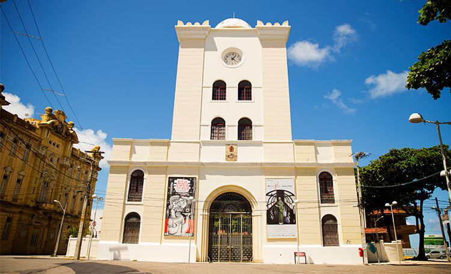
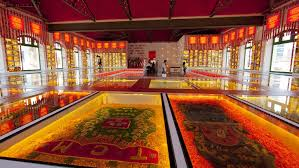

A Torre Malakoff é um importante monumento histórico localizado no Recife Antigo. Construída no século XIX, a torre servia como observatório astronômico e como portal de entrada para o Arsenal da Marinha. Atualmente, é um centro cultural que abriga exposições e eventos.
O Paço do Frevo é um espaço dedicado à celebração e preservação do frevo, uma das mais tradicionais manifestações culturais de Pernambuco. Localizado no coração do Recife Antigo, o Paço do Frevo oferece exposições interativas, apresentações e oficinas que mantêm viva a história e a arte do frevo.
